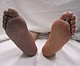

thrombosis

Definition: Thrombosis (from Ancient Greek θρόμβωσις thrómbōsis "clotting") is the formation of a blood clot inside a blood vessel, obstructing the flow of blood through the circulatory system. When a blood vessel (a vein or an artery) is injured, the body uses platelets (thrombocytes) and fibrin to form a blood clot to prevent blood loss. Even when a blood vessel is not injured, blood clots may form in the body under certain conditions. A clot, or a piece of the clot, that breaks free and begins to travel around the body is known as an embolus.Thrombosis may occur in veins (venous thrombosis) or in arteries (arterial thrombosis). Venous thrombosis (sometimes called DVT, deep vein thrombosis) leads to a blood clot in the affected part of the body, while arterial thrombosis (and, rarely, severe venous thrombosis) affects the blood supply and leads to damage of the tissue supplied by that artery (ischemia and necrosis). A piece of either an arterial or a venous thrombus can break off as an embolus, which could then travel through the circulation and lodge somewhere else as an embolism. This type of embolism is known as a thromboembolism. Complications can arise when a venous thromboembolism (commonly called a VTE) lodges in the lung as a pulmonary embolism. An arterial embolus may travel further down the affected blood vessel, where it can lodge as an embolism.
Source: Wikipedia
Wikipedia Page (Something wrong with this association? Let us know.)
Wikidata Page (Something wrong with this association? Let us know.)